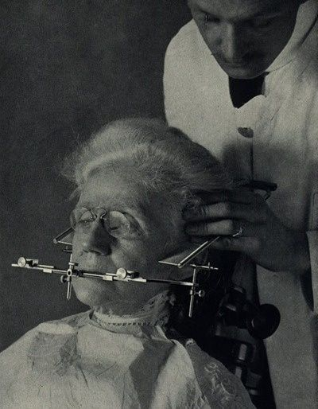
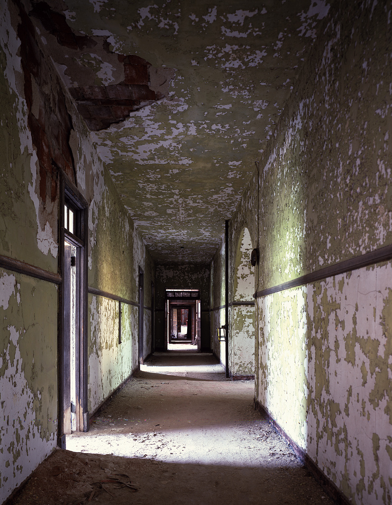
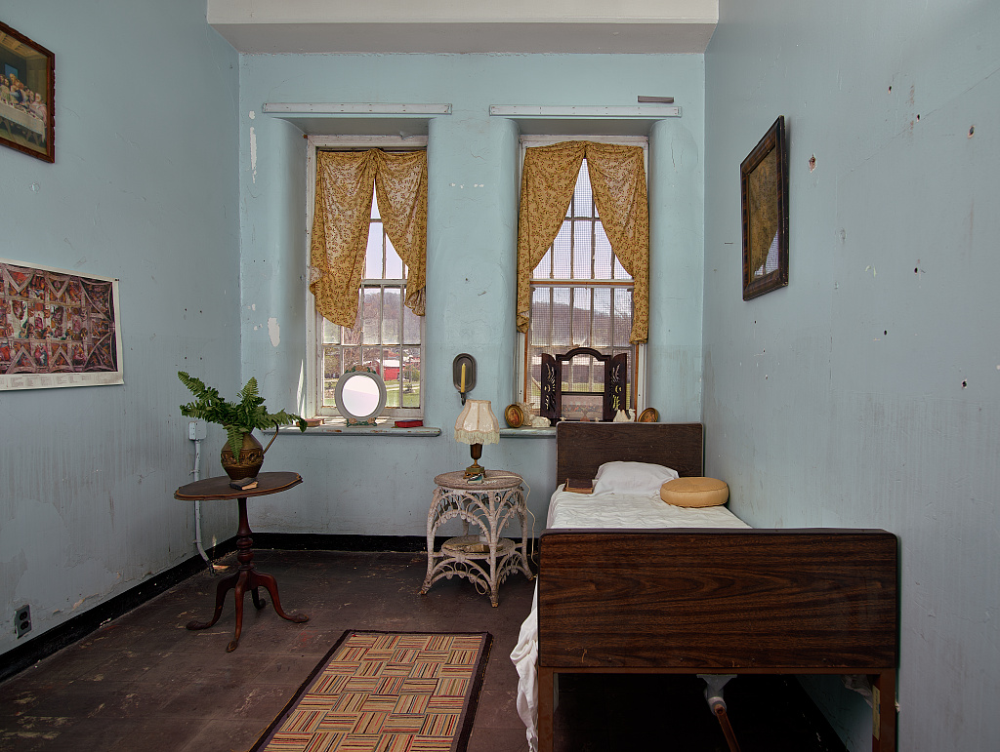
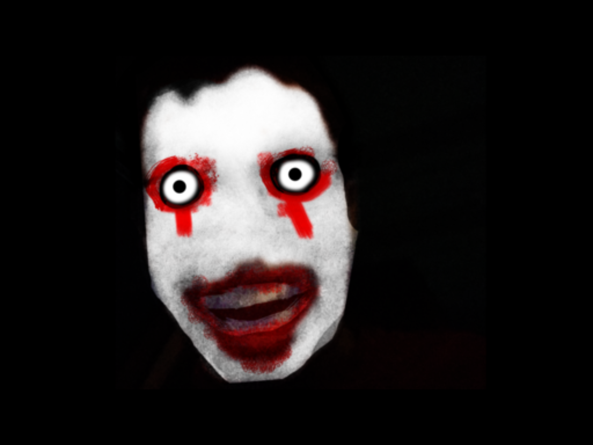
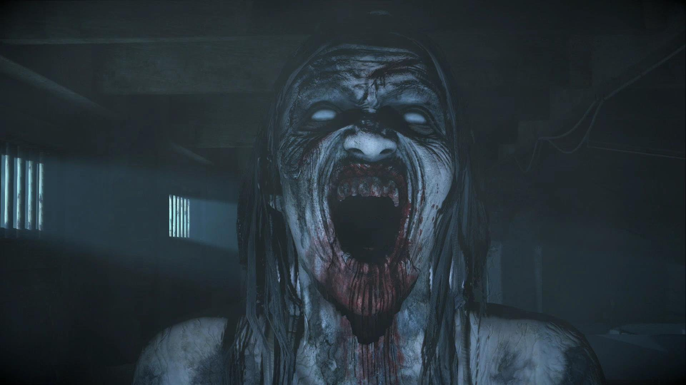
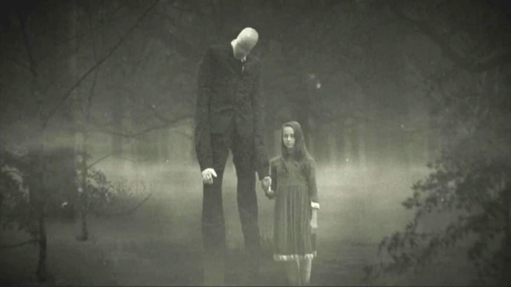
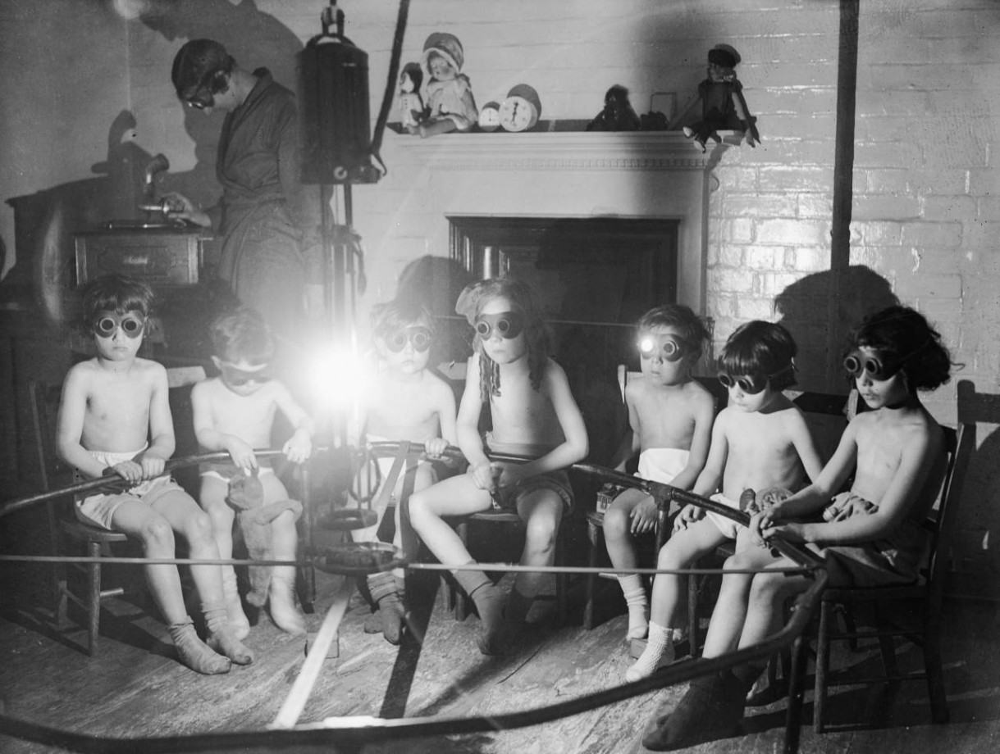
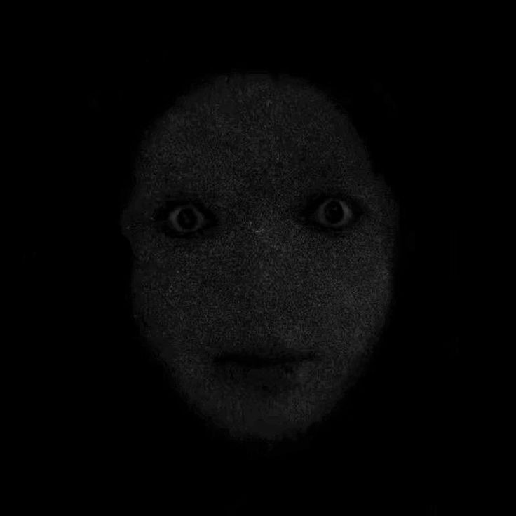

DOSSIER #012 : PROJET "PUPILLE"
SUJET : Homme, 24 ans.
PROCEDURE : Ablation des paupieres et injection de nitrate d'argent dans le nerf optique.
RESULTAT : Le sujet pretend voir des "etres de geometrie" ramper sur les murs de la cellule.
A 04h00, il a tente de s'arracher les yeux en hurlant que "le noir est trop brillant".
[NOTE DU DR. MALUM : "Il ne mentait pas. J'ai vu les ombres bouger moi aussi."]
?
?
?
?
?
?
?
?
DOSSIER #088 : LA FREQUENCE DU VIDE
"Le son n'etait pas dans mes oreilles. Il etait dans mes os. Mes dents ont commence a vibrer jusqu'a ce qu'elles eclatent."
.edee... .
.eEEBBEEBBEEee. .
.eEBEEBBEEBBEEBBEEe.
eEBBEEBBEEBBEEBBEEBBEe
eEBBEEBBEEBBEEBBEEBBEEBBe
eEBBEEBBEEBBEEBBEEBBEEBBEEb
dBEEBBEEBBEEBBEEBBEEBBEEBBEEb
BEEBBEEBBEEBBEEBBEEBBEEBBEEBB
BEEBBEEBBEEBBEEBBEEBBEEBBEEBB
BEEBBEEBBEEBBEEBBEEBBEEBBEEBB
BEEBBEEBBEEBBEEBBEEBBEEBBEEBB
"BEEBBEEBBEEBBEEBBEEBBEEBBEEB"
"BEEBBEEBBEEBBEEBBEEBBEEBBE"
"BEEBBEEBBEEBBEEBBEEBBEB"
"BEEBBEEBBEEBBEEBBEB"
"BEEBBEEBBEEBBEB"
""EEBBE""
ALERTE BIOLOGIQUE : SPECIMEN #i7
Le corps du sujet a rejete sa propre peau a 100%.
Pourtant, il continue de marcher. Il cherche de la peau neuve.
PEUT-ETRE LA VOTRE ?

> LOT RECUPERE APRES INCENDIE // PLAQUES HUMIDES // INDEX HUMAIN INCOMPLET

CAMERA 04 // COULOIR SANS FINDOSSIER #143 : CHAMBRE D'OBSERVATION
SUJET : femme, 31 ans.
PROCEDURE : privee de miroirs pendant 11 jours, exposee uniquement a des reflets dans de l'eau noire.
RESULTAT : les moniteurs ont compte deux respirations dans une piece ou un seul corps etait present.
Au matin, le sujet parlait avec une voix plus lente que ses mouvements.
NOTE : ne jamais ouvrir la porte si la respiration continue apres extinction des lampes.
DOSSIER #219 : LE BAIN D'ECHO
SUJET : homme, 42 ans.
PROCEDURE : anesthesie partielle, micro-impulsions sonores dans la machoire, lumiere blanche fixe.
RESULTAT : le sujet a cesse de repondre, puis les instruments ont repete ses derniers mots sans source
electrique branchee.
TRANSCRIPTION : "ils m'ont remis dans le mauvais corps."
DOSSIER #304 : PROTOCOLE "MAINS FROIDES"
SUJET : groupe de 6 volontaires.
PROCEDURE : synchronisation du pouls par chambre froide, privation de sommeil, lecture de dossiers falsifies.
RESULTAT : chaque volontaire a donne le meme nom pour l'observateur absent.
Aucun employe de ce nom n'a jamais existe.
ANOMALIE : les empreintes retrouvees sur les vitres etaient a l'interieur du verre.
DOSSIER #511 : PAVILLON INVERSE
SUJET : patient sans identite administrative.
PROCEDURE : exposition a une lumiere rouge pulsee, isolement auditif, journal de reve obligatoire.
RESULTAT : les pages du journal ont ete retrouvees remplies avant distribution du cahier.
Le patient connaissait les cicatrices des techniciens.
DIRECTIVE : bruler les journaux avant de les lire.

BATIMENT 12 // SOUS-SOLDOSSIER #690 : LE MARCHEUR DU SOUS-SOL
SUJET : inconnu, taille variable selon les temoins.
PROCEDURE : tentative de confinement par lumiere constante et camera thermique.
RESULTAT : la camera a enregistre une silhouette froide marchant contre le plafond.
Les gardes ont refuse d'entrer apres avoir entendu leurs propres pas derriere eux.
ETAT : zone condamnee. Les cadenas sont remplaces chaque nuit.






TOTAL_CASES_RECOVERED: 666
FAILED_EXPERIMENTS: ALL OF THEM